Herkesi bir dakikalığına sessiz olmaya davet ediyoruz
.png) Medellin/Kolombiya
Medellin/Kolombiya
28 Ekim Pazar 16:00
 Anma

Mineral Kayaları Sergisi
Bilecik/Türkiye13 Kasım Pazartesi 10:00
Sergi
Önerilenler
Medellin/Kolombiya
Bilecik/Türkiye